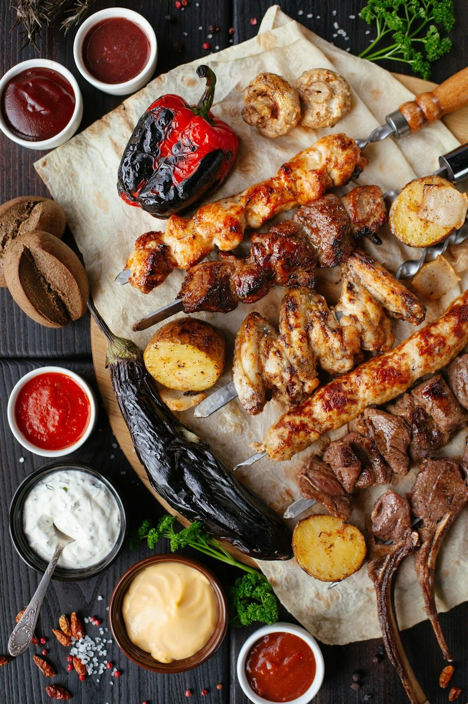
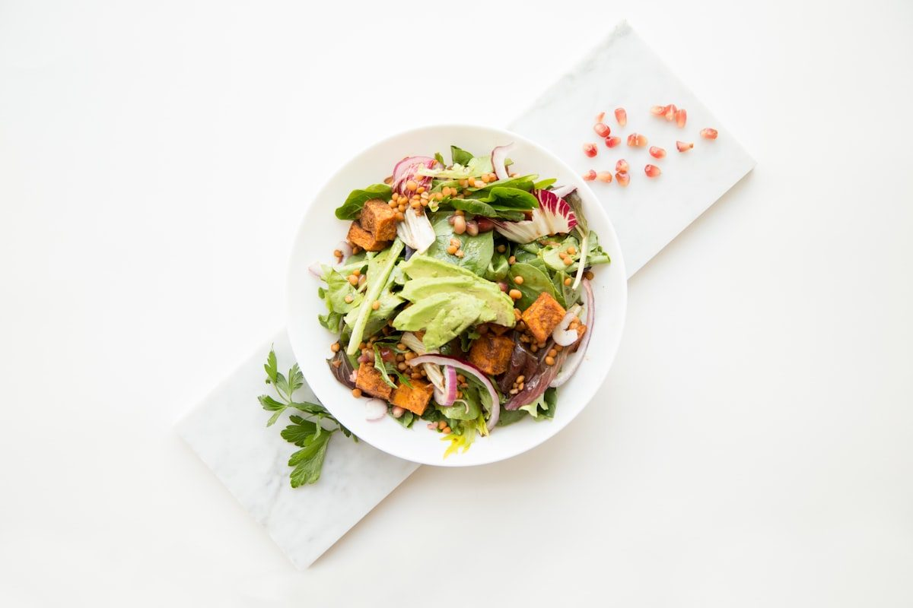
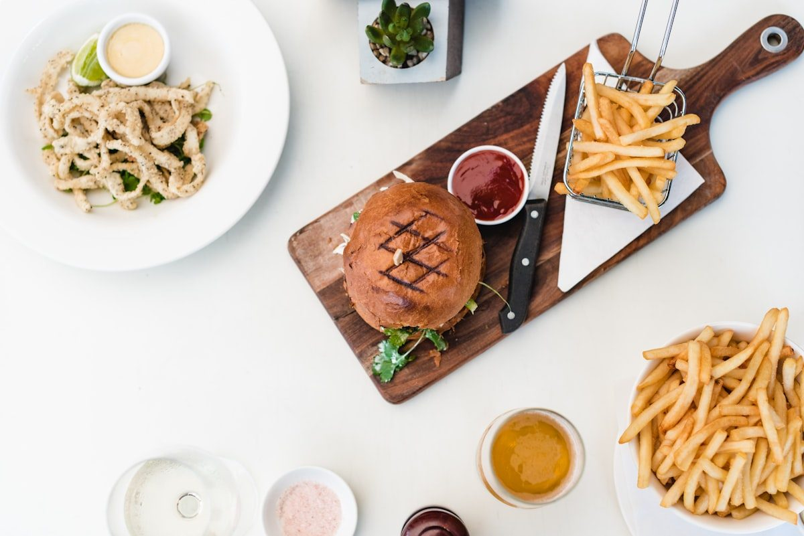
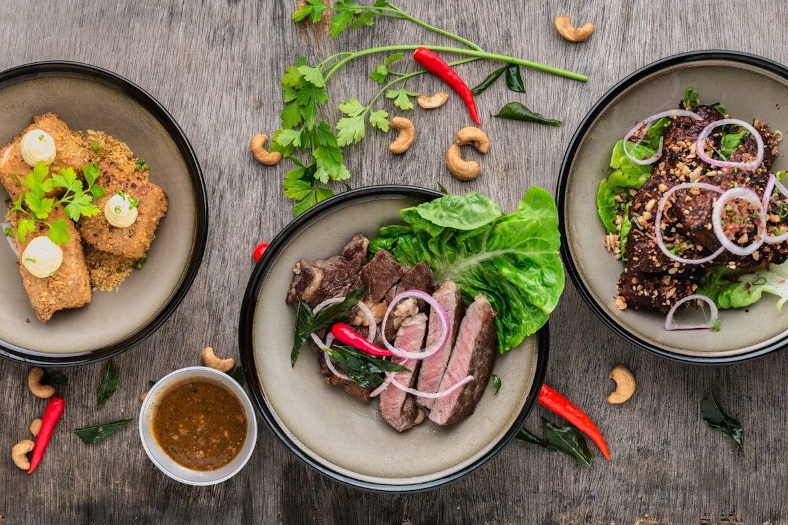
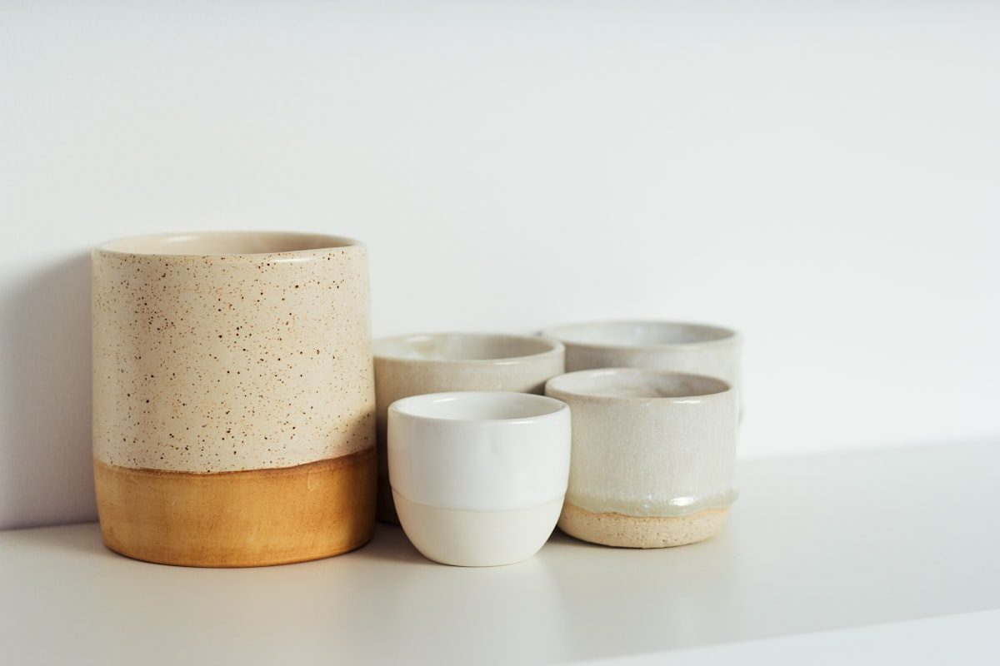
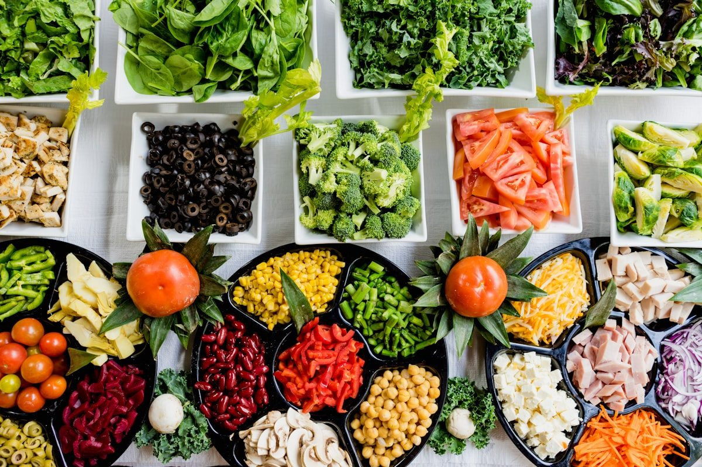
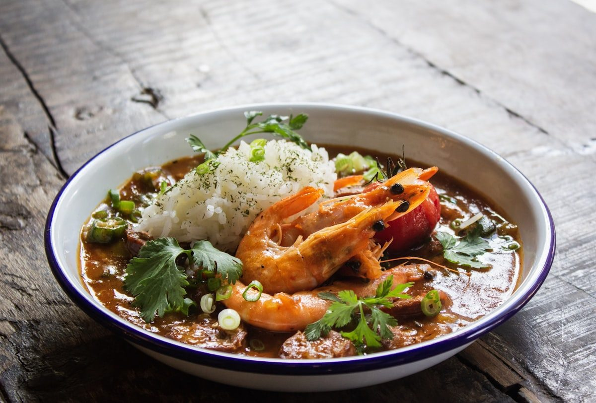
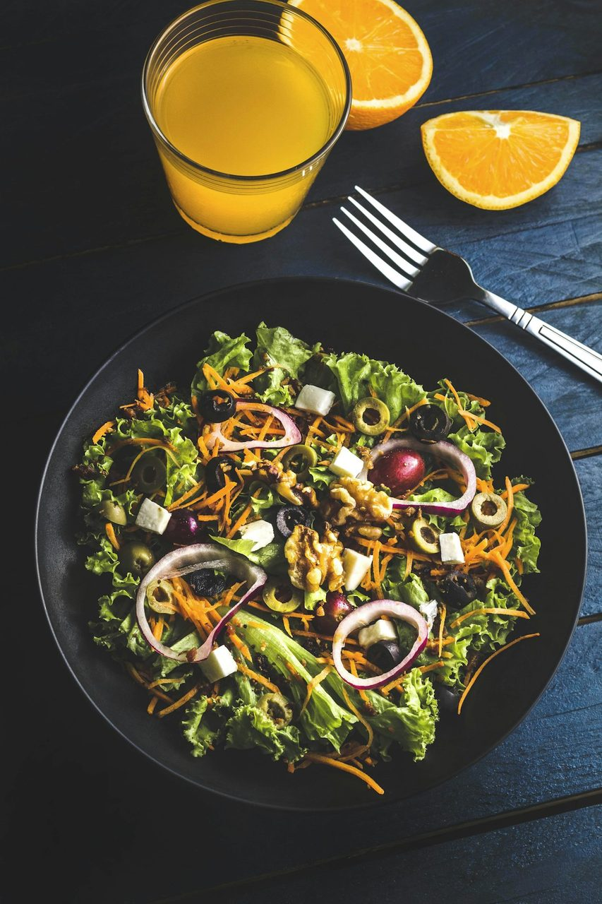
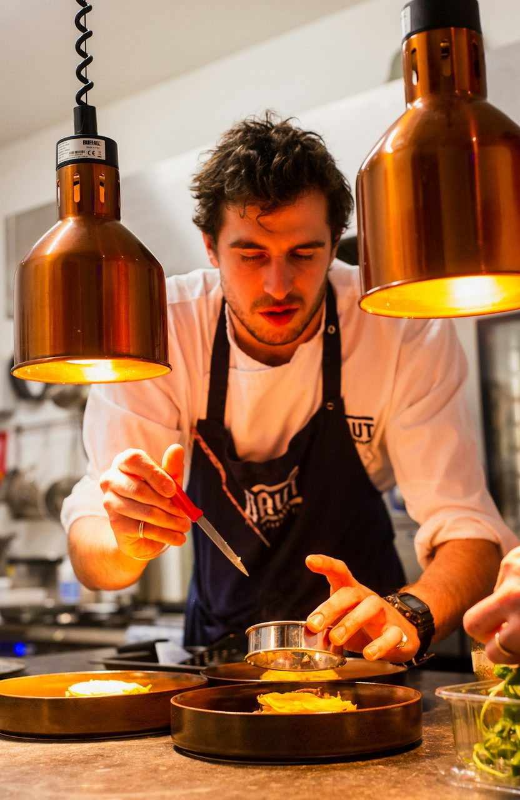
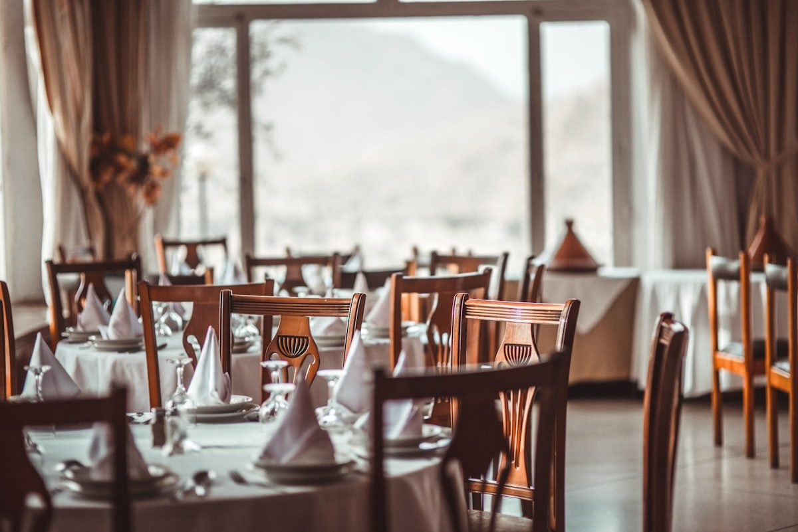

The Grand Evening Platter Engineered for Shared Feasts
Elevate your communal dinner table with artisan stoneware and sustainably harvested walnut platters that keep slow-braised cuts warm and family stories flowing.
Reclaiming the Shared Table Through Timeless Dinnerware
At SupperPlatter, we believe that dinner is the defining anchor of human connection. When family and friends gather around an ample serving platter, the boundary between meal and ceremony dissolves into warm conviviality.
-
•
Uncompromised Thermal Mass: Fired at 2,340°F to maintain slow-roast temperatures for over 45 minutes at the table.
-
•
Ergonomic Hand-Carved Grips: Integrated underside finger recesses engineered for confident, spill-free transport from oven to tabletop.
-
•
100% Non-Toxic Mineral Glazes: Certified zero lead, cadmium, or volatile synthetic sealers for absolute food contact purity.

Master Dinner Platters for Every Gathering Size
Each silhouette is hand-thrown or precision-jointed in small artisan batches to balance aesthetic majesty with effortless kitchen utility.

The Grand Oval Braising Platter
Measuring 22 inches in length with a deep 1.5-inch juice retention rim, this platter effortlessly accommodates whole roasted heritage birds and root vegetable medleys.
View Specifications
The Mercer End-Grain Carving Board
Crafted from kiln-dried American black walnut and conditioned with organic beeswax, providing knife-friendly resistance for prime rib and brisket carving.
View Specifications
The Round Convivial Sharing Dish
An 18-inch circular profile designed for central table placement, allowing diners on all sides effortless access to pasta al forno, roasted chops, and braised greens.
View Specifications
The Science of Tabletop Temperature Preservation
A magnificent dinner is often ruined when hot entrees cool prematurely upon transfer to room-temperature serving dishes. Our stoneware composition solves this dilemma through deliberate material density.
By formulating our proprietary clay body with 32 percent calcined refractory feldspar, our platters achieve a thermal absorption coefficient of 1.48 W/m·K. When pre-warmed in a moderate 175°F warming oven for ten minutes, the platter serves as a gentle radiating heat reservoir that maintains food warmth throughout a prolonged multi-course supper.
Request Thermal Data SheetPlating Versatility for the Modern Host
From rustic seasonal harvest roasts to refined coastal seafood platters, our pieces are tailored for diverse culinary traditions.

Autumn Harvest Roots
Generous thermal capacity allows roasted butternut squash, glazed parsnips, and rosemary shallots to caramelize and remain piping hot at the dining table.

Braised Shank & Reductions
Deep sloping rim profiles prevent rich reductions and cooking jus from spilling during vigorous carving or serving across crowded family dinner tables.

Mediterranean Mezze Feast
Matte non-porous glaze surfaces resist staining from extra virgin olive oil, balsamic vinegar reductions, and pomegranate molasses.
The Four Pillars of SupperPlatter Craftsmanship
Every piece undergoes a multi-week transformation from raw earth to an enduring culinary heirloom.
-
1.
Raw Mineral Sourcing: Sourced exclusively from pristine American clay deposits free of synthetic dyes and recycled urban aggregate.
-
2.
Dual Vitrification Firing: Bisque fired at 1,800°F followed by high-fire glaze maturation at cone 10 (2,340°F) for extreme vitreous density.
-
3.
Thermal Shock Stress Profiling: Every batch is tested from 400°F oven heat to room temperature counters to ensure total fracture resistance.
-
4.
Hand-Burnished Finishing: The base foot-ring is hand-polished with 400-grit diamond pads to prevent scratching delicate mahogany dining tables.


Visit the Mercer Street Culinary Tasting Room
Located at 181 Mercer Street in SoHo, New York, our private atelier invites culinary enthusiasts and dinner party hosts to touch our clay weights and examine glaze lusters in person.
Bring your family dinner table dimensions and preferred guest counts; our dining concierges will curate an integrated suite of platters, gravy boats, and condiment vessels tailored to your entertaining ritual.
Mercer Atelier Visiting Hours:
Tuesday – Saturday: 10:00 AM – 6:30 PM EST
Private Evening Host Tastings: By Appointment
Endorsed by Hosts Who Cherish the Table
Read verbatim impressions from dinner party creators and private chefs who rely on SupperPlatter daily.
“Serving a fourteen-pound roasted ribeye on the Mercer Walnut Carving Platter transformed our holiday dinner. The juice canal caught every ounce of jus, and the wood grain drew audible gasps when brought to the table.”
“The thermal mass of the Grand Oval platter is remarkable. We pre-warmed it in the oven, and thirty minutes into dinner, the braised lamb shoulder was still emitting steam. It completely changed our hosting flow.”
“Finding serving pieces that are both oven-safe to 500 degrees and gorgeous enough for a formal anniversary dinner is nearly impossible. SupperPlatter created modern heirlooms that our children will inherit.”
Frequently Asked Hospitality Inquiries
Everything you need to know about thermal warming, dishwasher safety, and timber conditioning.
Transform Your Next Evening Feast into an Heirloom Memory
Whether hosting an intimate candlelight dinner for four or a vibrant festive feast for sixteen, choose dinnerware crafted with purpose, thermal science, and generational integrity.